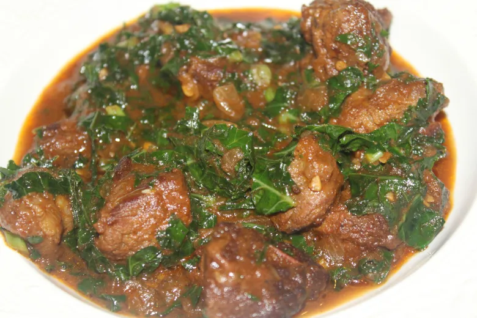
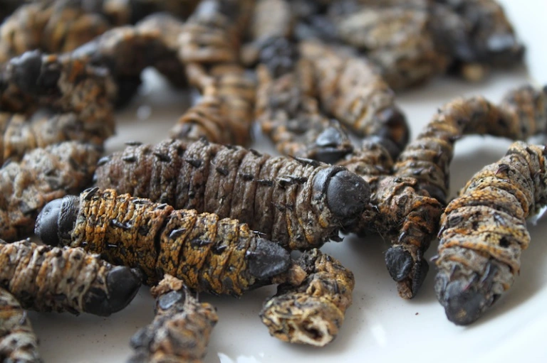
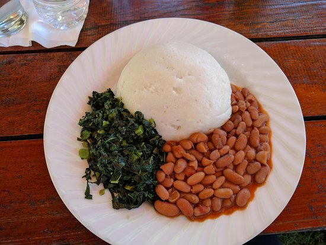
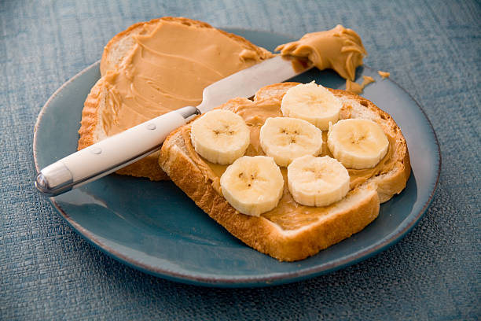
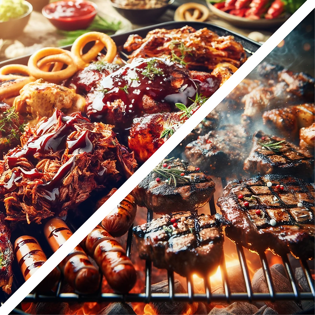
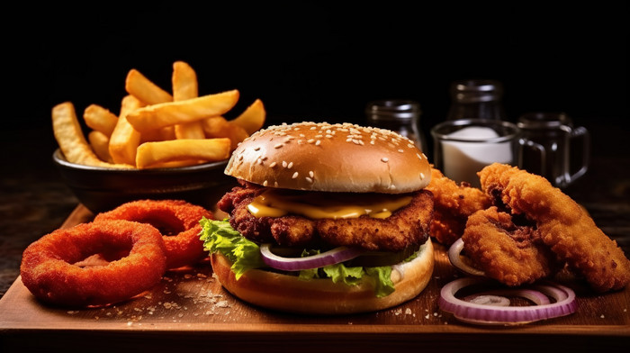
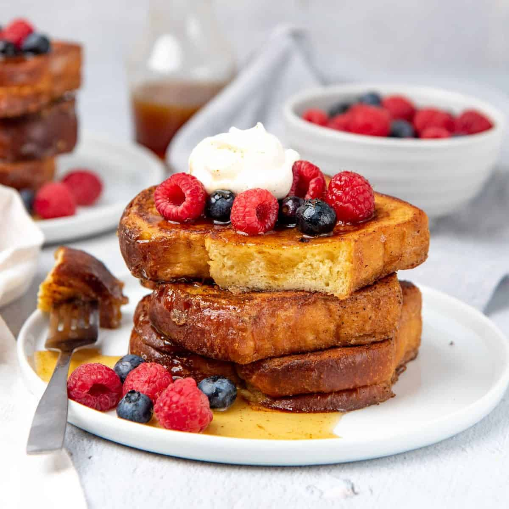

Eating healthy and living a balanced lifestyle is one of the most important investments you can make in yourself. A diet rich in whole foods, fruits, vegetables, and lean proteins not only boosts your energy levels and supports a healthy weight, but also reduces the risk of chronic diseases such as heart disease, diabetes, and certain types of cancer. For example, studies have shown that consuming a diet high in fiber-rich foods like whole grains, legumes, and nuts can help lower cholesterol levels and regulate blood sugar levels. Similarly, incorporating omega-3 rich foods like fatty fish, flaxseeds, and walnuts into your diet can help reduce inflammation and improve heart health. In addition to a healthy diet, regular physical activity is also crucial for overall well-being. Aim for at least 30 minutes of moderate-intensity exercise or 15 minutes of vigorous-intensity exercise per day to boost your mood, improve sleep quality, and increase energy levels. Examples of moderate-intensity exercises include brisk walking, swimming, and cycling, while examples of vigorous-intensity exercises include running, jumping rope, and high-intensity interval training. Furthermore, getting enough sleep is also essential for maintaining a healthy lifestyle. Aim for 7-9 hours of sleep each night to help your body repair and regenerate cells, support brain function and memory, and reduce stress levels. Some simple ways to improve sleep quality include establishing a consistent bedtime routine, avoiding screens before bed, and creating a relaxing bedtime environment. By incorporating these habits into your daily routine - including a balanced diet, regular physical activity, and sufficient sleep - you can take control of your health and wellbeing, reduce your risk of chronic diseases, and enjoy a happier, healthier life.
Sadza with Stew (Harare-style) + Sadza (cornmeal porridge)with beef or chicken stew made with onions, garlic, tomatoes,and spices
Chesa (fried catfish) with Fura (millet porridge) + Fried catfish served with fura, a type of millet porridge similar to oatmeal
Braai (barbecue) with boerewors (sausages), chops, and vegetables
Mutakura (mopani worms) with bread and tea + Fried mopani worms, a type of edible insect, served with toasted bread and a cup of tea
Sadza neNyama (sadza with meat) + Sadza topped with minced beef or chicken, onions, and tomatoes
Nhedzi (pea stew) with rice + A hearty pea stew made with split peas, onions, garlic, and spices, served with a side of rice
Mahangu (wild fruit) smoothie with yogurt and honey + A refreshing smoothie made with wild fruit like mahangu, yogurt, and honey
Vetkoek (deep-fried doughnuts) with mince meat filling + Fried doughnuts filled with minced beef or chicken and served with a side of tomato sauce
Chikwakwa (bean stew) with sadza + A flavorful bean stew made with kidney beans, onions, garlic, and spices, served with sadza
Mopani worm omelette + An omelette filled with fried mopani worms and served with toast or sadza
Peanut butter sandwiches with sliced banana and honey + A classic peanut butter sandwich paired with sliced banana and a drizzle of honey
Beef or chicken stew with sadza + A hearty beef or chicken stew made with onions, garlic, tomatoes, and spices, served with sadza
Groundnut porridge with milk and sugar + A creamy porridge made from groundnuts (peanuts), milk, and sugar
Chibuku (maize mealie meal porridge) with fried fish + Fried fish served on top of a bed of maize mealie meal porridge
Braai (barbecue) night! Grill up some boerewors, chops, and vegetables
Sadza breakfast bowl with eggs and cheese + A savory breakfast bowl filled with sadza, scrambled eggs, cheese, and a side of toast or fura
Chicken or beef burgers with fries + Juicy burgers made from beef or chicken, topped with lettuce, tomato, cheese, and served with crispy fries
Nhimbe sauce pasta dish (fruit in sour milk sauce) + A creamy pasta dish made with sour milk, fruit like mango or pineapple, and spices
Bread pudding French toast + Sliced bread soaked in a mixture of eggs, milk, sugar, and spices, then fried until golden brown
Sadza neMhure (sadza with vegetables) + Sadza topped with sautéed vegetables like spinach, bell peppers, onions, and tomatoes
Traditional Zimbabwean dinner platter - sadza neNyama neMhure (sadza with meat and vegetables) + A hearty platter featuring sadza topped with minced beef or chicken, sautéed vegetables like spinach and bell peppers
Chef Sithandwa Cooking
Interview with Dietitian-Nutritionist
Company Details: